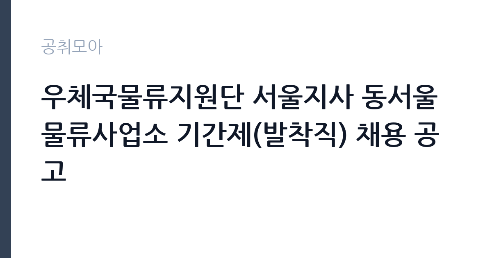

[공공기관] 우체국물류지원단 서울지사 동서울물류사업소 기간제(발착직) 채용 공고
(재)우체국물류지원단 · 서울 · 마감 2026-10-29 (D-6) · 출처 잡알리오

한눈에 보는 모집 조건
| 기관 | (재)우체국물류지원단 |
|---|---|
| 공고명 | 우체국물류지원단 서울지사 동서울물류사업소 기간제(발착직) 채용 공고 |
| 고용형태 | 기간제 |
| 근무지 | 서울 |
| 게시일 | 2026-10-23 |
| 마감일 | 2026-10-29 (D-6) |
지원자격, 이렇게 읽으세요
- 공공기관 채용공시
- 세부 조건은 원문 공고문 확인
모집단위는 기간제(발착직) 1명입니다. 기간제 근로자는 근로계약 기간이 정해진 신분입니다. 계약 기간과 갱신 가능 여부가 근로계약서에 명시되며 기간 만료 시 근로관계가 종료됩니다. 결원 보충이나 특정 사업 기간에 맞춰 채용되는 경우가 많아 업무 범위가 명확합니다. 서류 단계에서 요건을 충족하지 못하면 이후 전형을 준비할 기회가 없습니다. 학력·경력·자격 요건을 항목별로 대조해 표시해 두고, 경력은 재직증명서와 경력증명서로 입증해야 합니다. 증명서에 직무 내용이 구체적으로 적혀 있지 않으면 경력으로 인정받지 못하는 경우가 있으니 발급 전에 기재 내용을 확인하십시오. 자격증은 유효 기간과 등록 상태까지 확인해야 하고, 자격 취득 예정자로 지원하려면 공고문에 예정자 허용 조항이 있는지 반드시 봐야 합니다. 자격 취득 예정자는 채용 공고의 예정자 허용 조항을 먼저 확인해야 합니다. 조항이 없으면 지원 자체가 반려될 수 있습니다.
이 공고의 포인트
이 공고의 첫 번째 포인트는 고용 형태입니다. 계약 기간이 정해져 있어 근무 종료 시점이 명확합니다. 그만큼 짧은 기간에 어떤 실적을 남길지가 중요해집니다. 두 번째는 모집단위가 분명하다는 점입니다. 기간제(발착직) 1명 단위로 선발하므로 배치 이후 담당 업무의 범위를 미리 가늠할 수 있습니다. 세 번째는 근무지입니다. 서울 기준으로 근무지가 정해져 있어 통근 시간과 비용을 함께 계산해야 합니다. 접수 마감은 2026-10-29로 길지 않아, 공고를 늦게 확인하면 준비 시간이 그대로 줄어듭니다. 선발 절차가 단순한 편이어서 서류와 면접 준비에 집중할 수 있습니다.
전형은 어떻게 진행되나
선발 절차는 원문 공고문에 단계별로 적혀 있습니다. 1차 서류, 2차 면접의 2단계로 진행되는 구성이 일반적입니다. 서류에서는 자격 요건과 경력 증빙을 확인하고, 면접에서는 실제 업무 수행 능력과 조직 적응을 봅니다. 직무에 따라 필기시험이나 실기, 컴퓨터 활용 시험이 추가되기도 하므로 공고문의 전형표를 먼저 확인하십시오. 단계별로 합격자만 다음 전형에 응시할 수 있고, 단계마다 응시 자격 확인 서류를 다시 제출해야 하는 경우가 있습니다. 최종합격자 발표 후에는 신원조회와 채용 신체검사가 남아 있습니다. 경력 증명서에 직무 내용이 적혀 있지 않으면 인정받지 못할 수 있으므로 상세 기재를 요청하십시오.
원문에서 확인한 전형 방식
□ 학력 및 성별 제한 없으며, 신체 건강한 자 □ 남성은 병역을 필하거나 면제 받은 자 □ 만 60세 이하인 자(공고일 기준) □ 우체국물류지원단 인사규정상의 채용 결격사유가 없는 자 □ 채용 즉시 근무 가능자
이런 분께 추천해요
- 서울에서 출퇴근이 가능한 분
- 우편물 발착 직무 경험이나 관련 자격을 갖춘 분
- 기간제 조건과 근무 기간을 확인하고 지원할 수 있는 분
지원 전 체크리스트
- 응시자격 요건을 충족하는가 — 경력은 증명서로 입증해야 합니다
- 계약 기간과 근무 시작일·종료일을 확인했는가
- 제출서류 목록을 모두 준비했는가 — 누락 시 서류 단계에서 탈락합니다
- 접수 마감 2026-10-29 이전에 접수 방식을 확인해 제출했는가
모집 일정과 제출 타이밍
접수는 2026-10-29에 마감됩니다. 공고 게시일 2026-10-23부터 계산하면 준비 기간은 약 6일입니다. 우편 접수는 도착 기준으로 판정되는 경우가 많아 마감일 소인만 믿으면 안 됩니다. 제출 서류는 공고문에 적힌 순서대로 정리하면 담당자가 확인하기 쉬워 누락이 줄어듭니다. 서울 근무지는 대중교통 접근성이 좋은 대신 주차와 통근 시간이 변수입니다. 출퇴근 경로를 미리 확인하십시오.
직무 이해하기: 공공기관
우체국은 우정사업본부 산하에서 우편물 접수와 배달, 금융 서비스를 함께 운영하는 국가기관입니다. 지방우체국은 지역 단위로 집배 구역을 나눠 운영하며, 인력이 부족한 구역은 상시계약이나 기간제로 보충합니다. 우편물 물량은 명절과 연말에 몰리고, 폭설이나 집중호우 때는 배달 일정 조정이 필요합니다. 우체국물류지원단은 우편물의 간선 운송과 물류센터 운영을 담당합니다. 발착직은 도착한 우편물을 노선별로 분류하고 출발 차량에 적재하며, 운송장과 전산 기록을 대조해 누락을 막습니다. 업무 매뉴얼과 지침이 문서로 정리되어 있어 절차를 익히면 반복 업무는 빠르게 손에 붙습니다.
자기소개서 작성 팁
우편물 발착 지원서는 직무 연관성을 앞세우는 것이 핵심입니다. 첫 문단에 지원 직무와 본인 경험을 한 문장으로 연결하고, 이어서 담당했던 업무의 규모와 결과를 수치로 제시하십시오. 구성은 지원 동기, 직무 경험, 기여 방안 순서가 무난합니다. 지원 동기는 (재)우체국물류지원단의 사업 중 본인이 관심을 가진 부분을 한 가지로 좁혀 서술하고 추상적인 표현은 줄이십시오. 직무 경험은 담당했던 업무와 규모, 결과를 수치로 제시하면 설득력이 올라갑니다. 기여 방안은 입사 후 첫 3개월과 1년 계획으로 나눠 쓰면 준비도가 드러납니다.
면접 준비 포인트
면접에서는 우편물 발착 직무를 얼마나 이해하고 있는지, 그리고 (재)우체국물류지원단의 사업을 어느 정도 알고 있는지 확인합니다. 답변은 상황, 판단, 조치 순서로 정리하면 전달이 분명해집니다. 면접 당일 신분증과 제출서류 원본을 요구하는 경우가 있으니 공고문의 준비물 목록을 확인하십시오.
급여·근무조건 읽는 법
기간제 근로자는 근로계약 기간이 정해진 신분이라 계약 종료 시점이 명확합니다. 보수는 기관의 기간제 임금 기준에 따라 월급 또는 일급으로 정해지고, 계약 기간이 짧으면 월 급여가 높아도 연간 총액은 적어질 수 있습니다. 2026년 적용 최저임금은 시급 10,320원, 월 환산 2,156,880원(209시간 기준, 고용노동부 고시 제2025-47호)입니다. 같은 기관의 무기계약직과 업무가 비슷해도 신분이 다르면 수당 항목이 달라지므로, 첨부 공고문의 처우표에서 기본급·수당·상여를 항목별로 확인하십시오. 이번 공고 본문에는 연봉·월급 실액이 제시되지 않아 구체적인 금액은 첨부 공고문의 처우 항목에서 확인해야 합니다. 실수령액을 계산하려면 세금과 4대 보험료를 빼야 합니다. 공고문에는 세전 금액만 제시되는 경우가 많으므로, 월 급여에서 약 9% 안팎의 공제가 발생한다고 보고 대략적인 수령액을 가늠하십시오. 부양가족 수와 비과세 항목에 따라 차이가 나므로 정확한 금액은 급여 담당 부서에 문의하는 것이 가장 확실합니다. 수당 항목과 지급 주기도 함께 확인하십시오.
자주 묻는 질문
- 선발 인원과 직급은 어떻게 되나요?
이번 공고의 모집단위는 기간제(발착직) 1명입니다. 직종별 인원과 직급은 공고문 모집분야 항목에 표로 제시되어 있으니 원문에서 확인하십시오. - 근무지는 어디인가요?
서울입니다. 세부 근무지와 출퇴근 조건은 원문 공고문의 근무예정지 항목에서 확인할 수 있습니다. - 보수는 얼마인가요?
기간제 신분에 따라 (재)우체국물류지원단의 임금 규정 또는 보수규정을 적용받습니다. 본문에 확정 금액이 없으므로 첨부 공고문 처우표에서 기본급과 수당을 나눠 확인하십시오.
함께 보면 좋은 공고
[공공기관] [광주보훈병원] 중증장애인 체험형 청년인턴(재택 사무보조) 채용 공고 — 마감 2026-11-02[공공기관] 국방기술품질원 2026년 하반기 정기채용(임용후보자(정규직, 무기사업직)) — 마감 2026-11-05[공공기관] 2026년 제6회 마포문화재단 직원 채용 공고( ~11.2.(월) 18:00 한)_ 5급 무대기계, 7급 무대음향 — 마감 2026-11-02출처: 잡알리오 공개정보를 바탕으로 공취모아가 정리한 안내글입니다. 모집 조건·일정은 변경될 수 있으니 지원 전 반드시 원문 공고문을 확인하세요. 본 글은 정보 제공용이며 합격을 보장하지 않습니다.